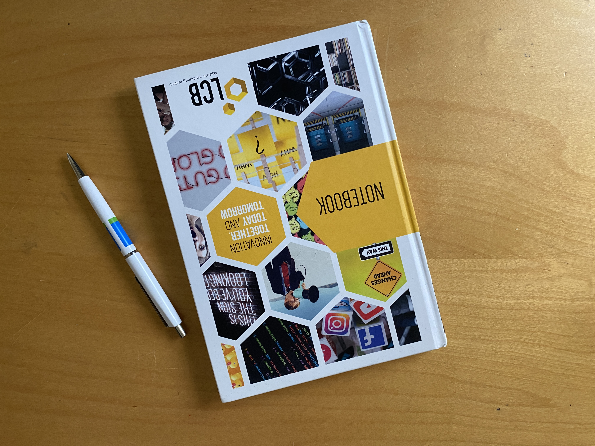

OVER MIJ
Wie ben ik?
Hallo, mijn naam is Luke. Ik ben 18 jaar oud en een software engineer! Momenteel studeer ik software development aan het SintLucas in Eindhoven. Daar leer ik hoe ik professionele mobiele applicaties kan maken voor onder andere iOS en Android. Ik heb al aardig wat ervaring op dit gebied. Op school zijn we vooral gericht op het maken en ontwerpen van websites.
Hobbies & sport
Ik heb verschillende hobby's en interesses. Ik vind het leuk om trompet te spelen, te scouten, te ontwerpen, te gamen en softwaretoepassingen te maken die creativiteit aanwakkeren. Qua sport doe ik aan zwemmen, fietsen en hardlopen. Deze activiteiten houden me betrokken en in goede conditie!
Ambities
Ik ben een student software-engineering. Ik werk graag aan zowel de front-end als de back-end van apps voor mobiel, desktop en internet. Ik vind het leuk om nieuwe en oude technologieën uit te proberen om meer te leren over programmeren. Op dit moment ben ik Unreal Engine 5 aan het verkennen, wat erg interessant is. Wat ik spannend vind, is experimenteren met verschillende dingen in het programmeren. Het helpt me om te leren en me aan te passen in dit steeds veranderende veld.
Waarom je mij zou moeten aanemen!
Ik ben een toegewijde student software-engineering met een passie voor leren en een sterk begrip van zowel front-end als back-end ontwikkeling. Mijn aanpassingsvermogen aan nieuwe technologieën en proactieve probleemoplossende aanpak maken mij een waardevolle aanvulling op elk project. Ik zet me in om niet alleen aan de verwachtingen te voldoen, maar ze ook te overtreffen met innovatieve oplossingen en een samenwerkingsmentaliteit.